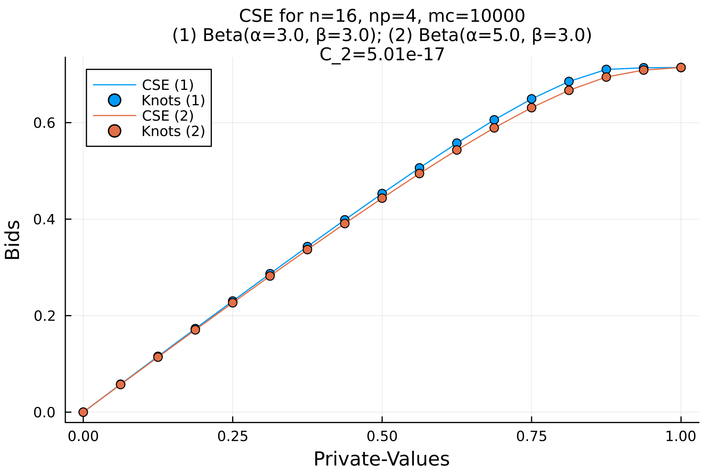
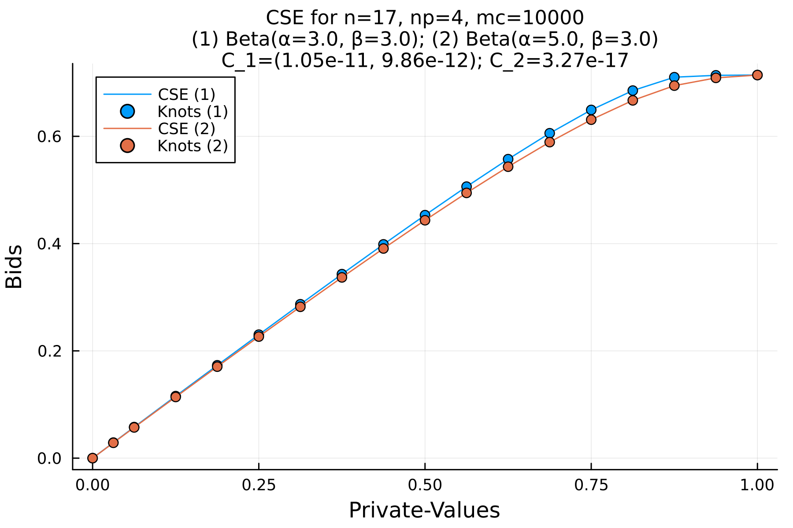

Asymmetric CSE example from afrprogs
This example is roughly equivalent to the asym.f example code from the supporting material to the paper by Armantier et al. [1]. Instead of just running a single n value (n = 16), it runs for n = 17 too.
Install dependencies
Make sure the required packages are installed by running the following from the root directory of this repo:
using Pkg
Pkg.instantiate()Load required modules
using ConstrainedStrategicEquilibrium
using Plots
using Distributions
using NonlinearSolveCreate the CSE problem
The original fortran asym code used n = 16 and the following initial guess:
nval = 16
xguess = Vector{Float64}(undef, 2 * nval - 1)
xguess[1] = -2.84827109173688
xguess[2] = -2.85209052797506
xguess[3] = -2.85688597597939
xguess[4] = -2.86243170560486
xguess[5] = -2.87005433886236
xguess[6] = -2.87972857171734
xguess[7] = -2.89195095174828
xguess[8] = -2.90986034638539
xguess[9] = -2.93411212816428
xguess[10] = -2.96990679761558
xguess[11] = -3.03212449908756
xguess[12] = -3.14051739544213
xguess[13] = -3.33100693581025
xguess[14] = -3.69184084490141
xguess[15] = -5.61683383184477
xguess[16] = -7.41860036191254
xguess[17] = 4.37486841314759
xguess[18] = 3.55315379806175
xguess[19] = 3.09860286531008
xguess[20] = 2.74440338704673
xguess[21] = 2.45415125926837
xguess[22] = 2.19413505997764
xguess[23] = 1.94448901027584
xguess[24] = 1.71125414593309
xguess[25] = 1.47745377147087
xguess[26] = 1.23478257742541
xguess[27] = 1.01951187118377
xguess[28] = 0.846654741348483
xguess[29] = 0.726435662568677
xguess[30] = 0.619443991395723
xguess[31] = 1.126973869523171.12697386952317Create an asymmetric CSE problem with the following (note we make a small change from the Fortran asym.f code by running from n = 16 to n = 17, instead of just n = 16):
cse_prob = AsymmetricAfrprogsCSEProblem(
inin=nval,
maxn=nval + 1,
np=4,
mc=10000,
solver_kwargs=(; show_trace=Val(true)),
solver_initial_guess=xguess,
)AsymmetricAfrprogsCSEProblem(np=4, mc=10000, n=16..17)Compute the CSE
Now compute the CSE for the problem we created
solutions = compute_cse(cse_prob)2-element Vector{ConstrainedStrategicEquilibrium.AsymmetricCSESolution}:
AsymmetricCSESolution(n=16, C_1=(NaN, NaN), C_2=5.01e-17)
AsymmetricCSESolution(n=17, C_1=(1.05e-11, 9.86e-12), C_2=3.27e-17)Postprocessing
Loop over the solutions and plot them all
for sol in solutions
plot(sol, dpi=300)
# Save the figure to a file
savefig("afr-progs-asym-n$(sol.n).png")
endView the result for n=16:

and n=17:

References
- [1] Armantier et al. Journal of Applied Econometrics, 23 (2008)
This page was generated using Literate.jl.